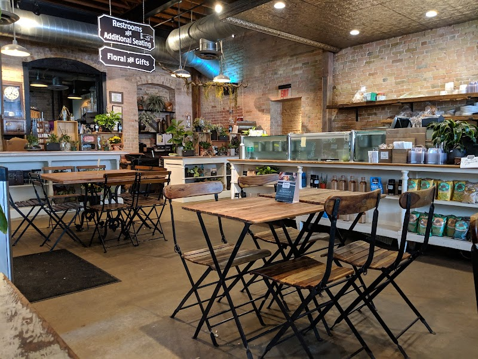

Our Story
Dummy's Café started as a simple idea to create a place where people can enjoy good food and spend time together. The owner, Madison Dummy, loved cooking and wanted to share different types of food in a warm and friendly space. It began in a small neighborhood and slowly became popular because of its cozy environment and tasty menu. Today, Dummy's Café is a place where people come to relax, eat, and feel comfortable.
When customers visit Dummy's Café, they can expect fresh and tasty food served in a clean and comfortable environment. The cafe has a calm and friendly atmosphere where people can relax, study, or hang out with friends. The staff are welcoming and always ready to help, making sure every customer has a good experience.
Meet the Team
Dummy's Café is led by a dedicated owner and a small, friendly team who work hard every day to give customers the best experience.
Chèf Fro-dough Baggins
Chef
Our chef makes coffee and pastries every day. He focus on making everything fresh, simple, and tasty for the customers.

Madison Dummy
Owner
The owner of Dummy's Café created the cafe with a simple goal of serving good coffee and pastries in a friendly place. He manages the cafe and make sure customers always have a good experience.
Mia Morrison
Manager
The manager of Dummy's Café helps run the cafe every day and makes sure everything works smoothly. She takes care of staff and customers to make sure everyone is happy and well served.